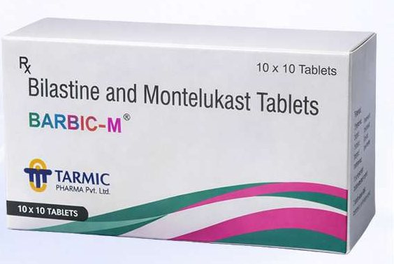
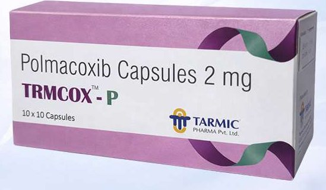
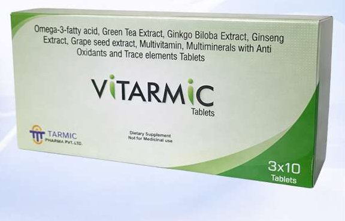
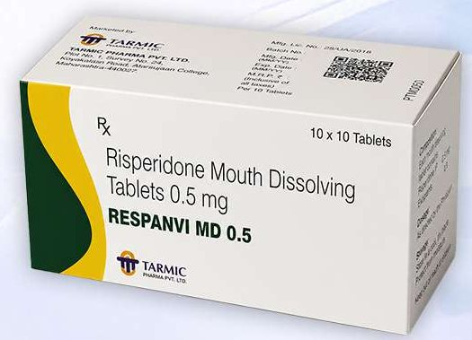
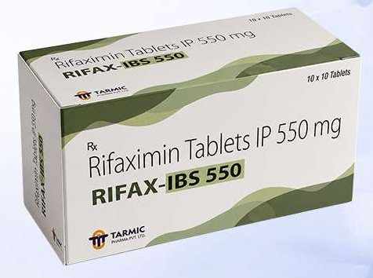
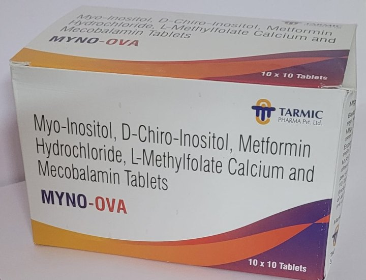
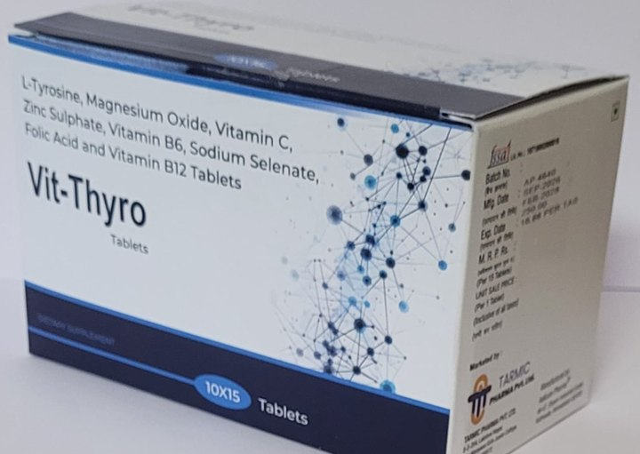

Other Medicines and Supplements
Specialty formulations including bilastine + montelukast (BARBIC M), polmacoxib (TRMCOX-P), risperidone mouth-dissolving tablets (RESPANVI MD), rifaximin (RIFAX-IBS) and nutritional supplements VITARMIC, Follistrong, MYNO-OVA and VIT-THYRO.
8 products


Others
VITARMIC
Omega-3 fatty acid, Green Tea Extract, Ginkgo Biloba Extract, Ginseng Extract, Grape seed extract, Multivitamin, Multiminerals with Anti Oxidants and Trace elements Tablets



Others
MYNO-OVA
Myo-Inositol, D-Chiro-Inositol, Metformin Hydrochloride, L-Methylfolate Calcium and Mecobalamin Tablets

Others
VIT-THYRO
L-Tyrosine, Magnesium Oxide, Vitamin C, Zinc Sulphate, Vitamin B6, Sodium Selenate, Folic Acid and Vitamin B12 Tablets
Prescription medicines should be used only on the advice of a registered medical practitioner. MRP is per strip as printed in the catalogue and may change; please confirm with us before ordering.